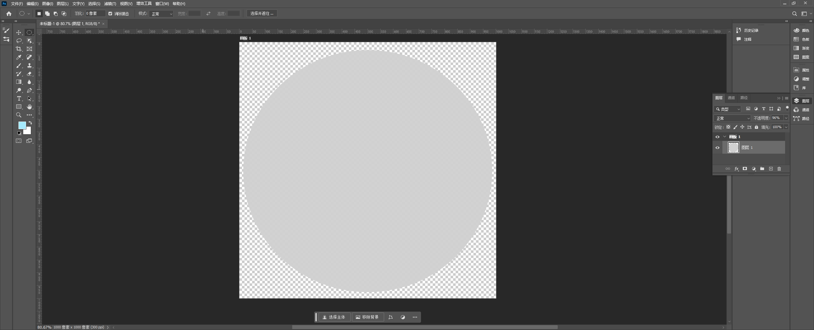

今天在上网冲浪的时候，看到Github上有一个明日方舟风格的
主题，这个主题让我感到新鲜的一点是网页中的鼠标指针特效
 这么舒服的动画效果我必须也要做一个，说干就干，新建个HTML文档。
这么舒服的动画效果我必须也要做一个，说干就干，新建个HTML文档。
* {
cursor: pointer;
}
这样，我们整个网页的鼠标指针样式就都变成了小手指的样式，不过这样还是太丑，我们仿照arknights主题的样式，打开PS，画一个指针图标出来看看

使用url()属性可以替换自己的素材图片* {
cursor: url("./source/cu.ico"), auto;
}
这样鼠标指针的效果就做好了（因为我的截图软件要用鼠标指针选区，所以截不到图）